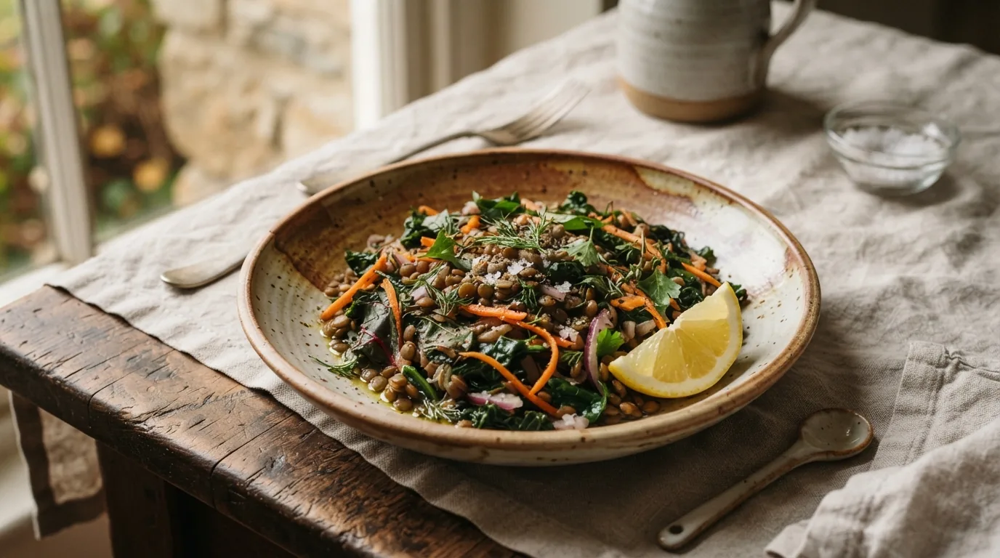
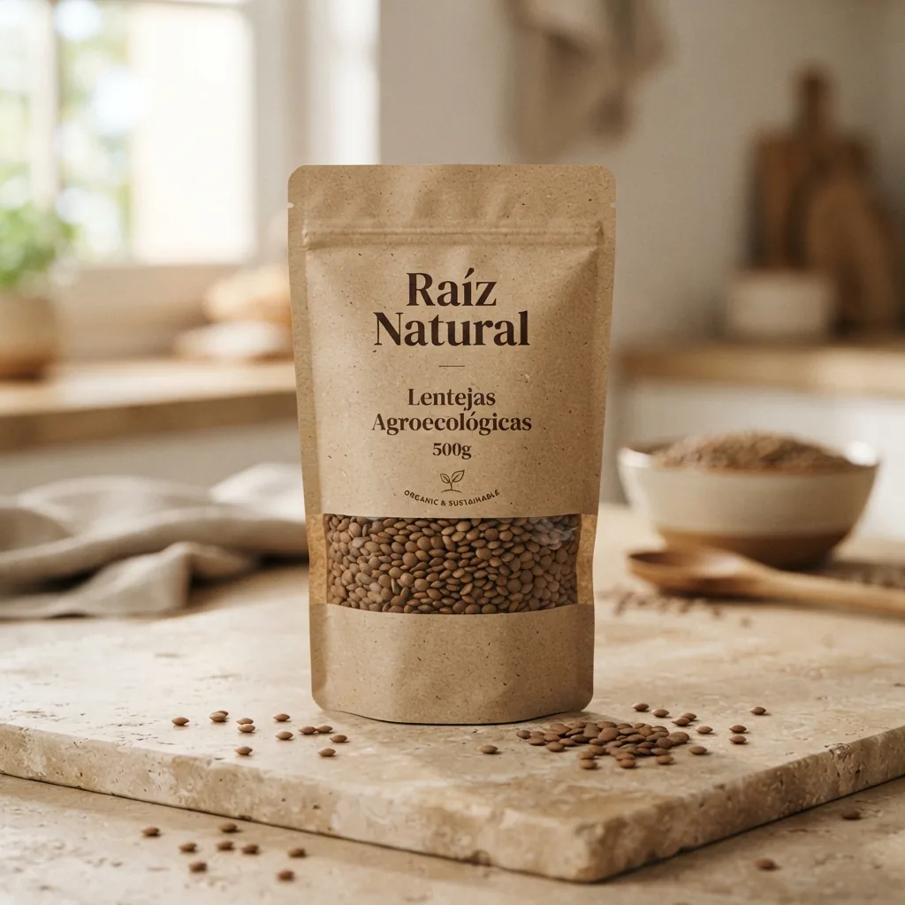

eco
NUTRICIÓN DE RAÍZ · PLATO TIBIO
Ensalada tibia de legumbres y verdes

Legumbres reconfortantes y verdes frescos de estación. Foto: Archivo Raíz.
schedule
TIEMPO TOTAL
20 minutos
soup_kitchen
RENDIMIENTO
2 porciones
Ingredientes •
Paso a paso •
1
Salteá las verdes 1 minuto hasta que se aflojen suavemente, manteniendo su vivo color vegetal.
2
Mezclalas en un cuenco amplio con las lentejas aún tibias y la frescura de la zanahoria rallada.
3
Condimentá con limón fresco recién exprimido, aceite de oliva virgen, sal marina y pimienta molida.
lightbulb
SECRETO DE COCINA
«Las legumbres tibias absorben los aderezos mucho mejor que frías; condimentá apenas las retires del calor.»

DESPENSA RECOMENDADA
Hecha con lentejas Raíz Natural
Agroecológicas seleccionadas a mano para cocciones tiernas y parejas.
DESLIZAR PARA CONTINUAR
arrow_downward
Pág. 07 · Edición Otoño
08 Hasta la próxima
arrow_forward